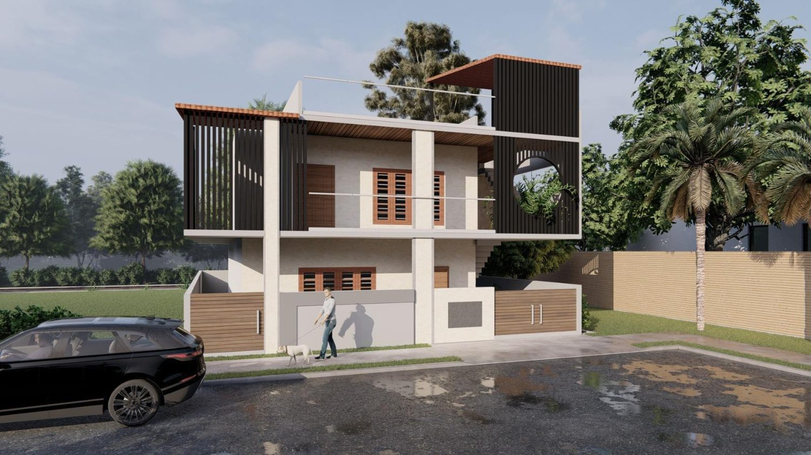
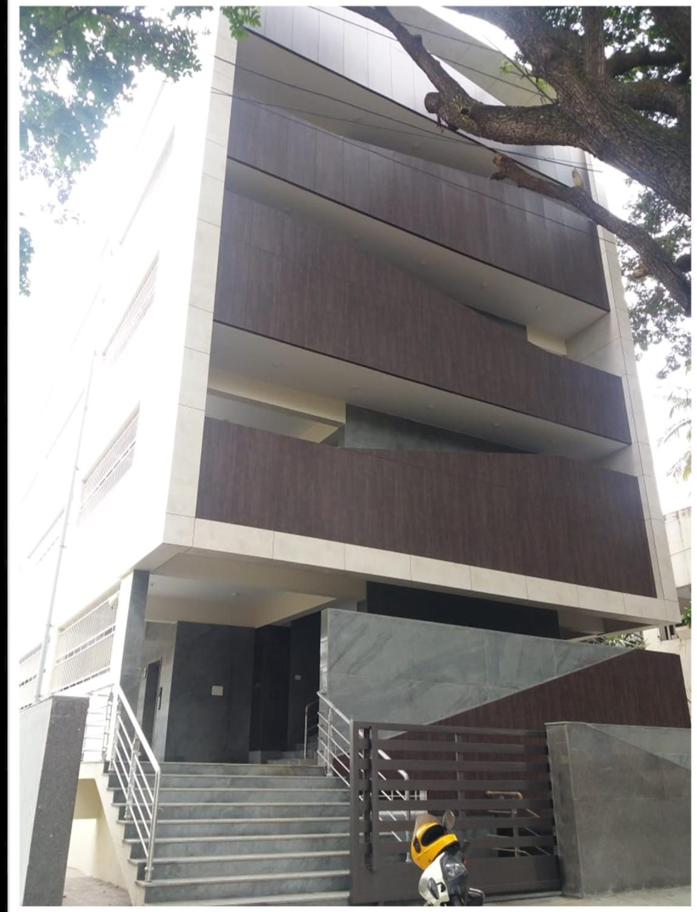
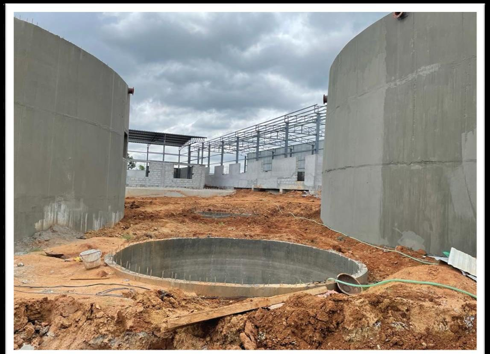
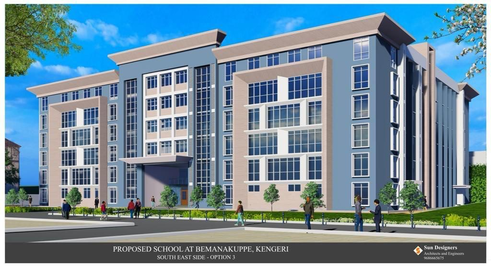
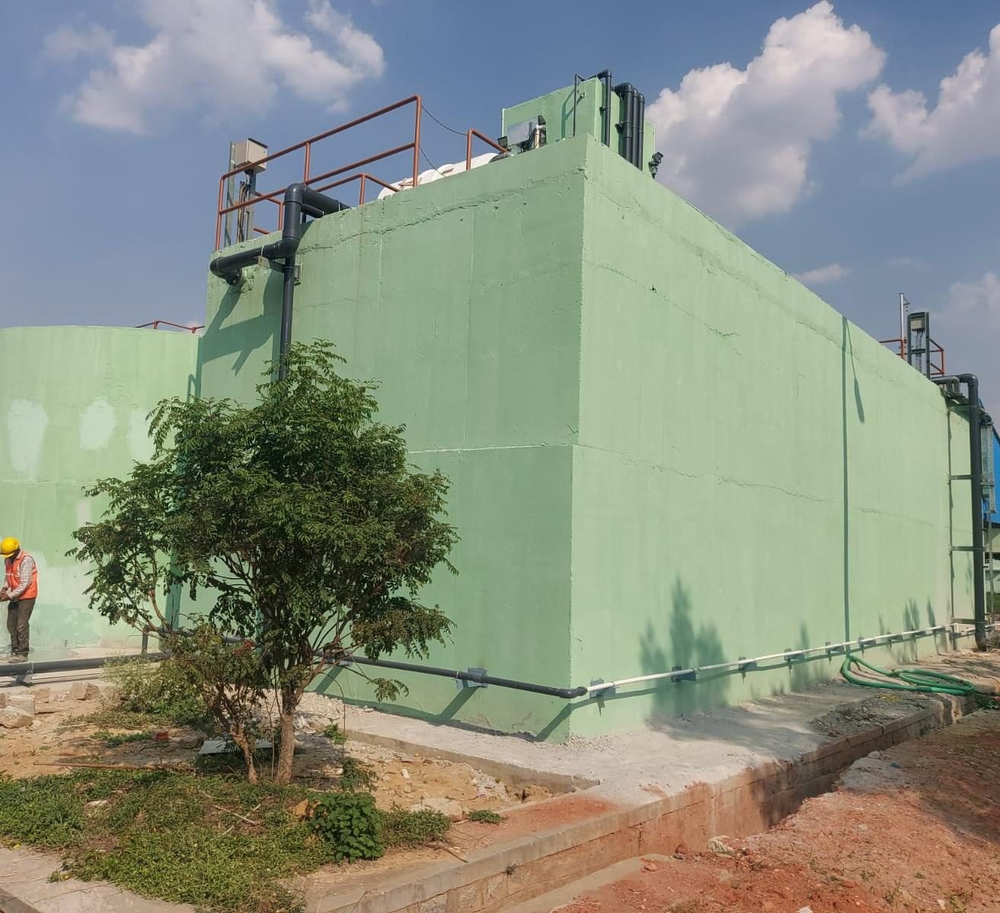

Home / Capabilities
Capabilities
Four services across five sectors — planning, plan approval, structural design and interiors, delivered for residential, commercial, industrial, institutional and infrastructure projects across Bengaluru.
Services
Take all four or just the stage you need — it's the same accountable team either way, led by a structural engineer.
Feasibility, site analysis and project planning. We agree the scope, budget and timeline up front, so the brief and the number match before any work starts.
Sanction drawings prepared and the approval process handled with the local authorities end to end — your project stays compliant and cleared to build.
Safe, efficient structural design by a postgraduate structural engineer. Load paths, sizing and detailing proven on paper before a single slab is poured.
False ceilings, wardrobes, kitchens, joinery and finishes by the same team — so you collect a complete, move-in-ready space, not a bare structure.
Sectors we work in
The same services, applied wherever you're building — here's what each sector looks like in practice.

Sector 01
Independent houses and multi-floor residences, from compact G+1 homes to 7,500 sft G+5 buildings. We handle the full build — RCC structure, modern elevations, and interiors including false ceilings, wardrobes, kitchens and joinery — so the home is move-in ready, not just watertight.

Sector 02
Office and retail buildings up to 17,000 sft and G+3, designed to read as professional, premium and durable. Stone and ACP facades, efficient floor plates, lifts and finished common areas — built to take daily commercial use and represent the brands inside them.

Sector 03
Factory and warehouse builds — pre-engineered sheds, mezzanine floors, EOT-crane bays and concrete roads — plus full renovations that turn ageing units into modern, glass-fronted facilities. Spaces planned around how the floor actually has to move and work.

Sector 04
Schools and campuses where structure, safety and circulation matter most. Our flagship is a G+6 school across 2 acres, with landscaped grounds, a playing field and an amphitheatre — a ₹20 Cr build planned for hundreds of students moving through it every day.

Sector 05
Heavy civil and water-treatment work — sewage and water treatment plants with circular clarifiers, high-rise tanks, concrete platforms and roads, on sites up to 1.5 acres. Precise, watertight concrete structures built to perform for decades under continuous load.
With every project
The engineering discipline is the same whether we're pouring a home's foundation or a clarifier base.
Most don't fit neatly — and that's fine. Describe what you're building and we'll scope it for you.